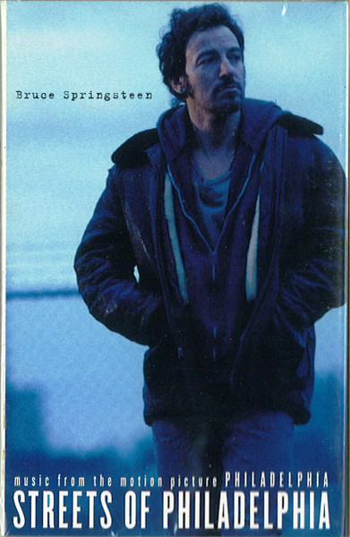

CASSETTE
Streets Of Philadelphia
Bruce Springsteen
Media: — · Sleeve: —
CA$15.00
Discogs SuggestedCA$37.19
Discogs MedianCA$37.19
Discogs HighCA$37.19
- Year
- 1994
- Label
- Columbia
- Catalog #
- 38T 77384
- Country
- USUS
- Genre / Style
- Rock · Folk Rock, Pop Rock